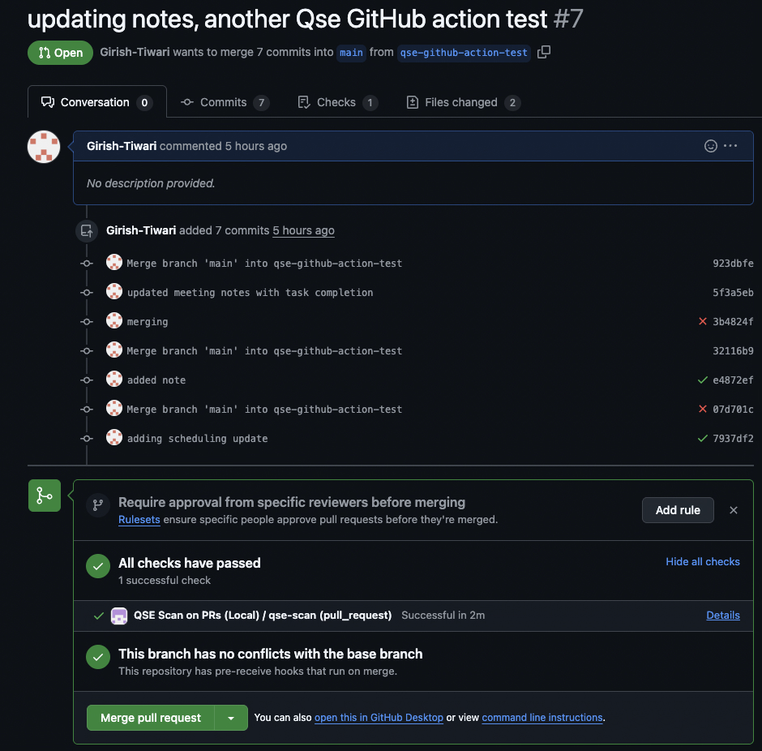
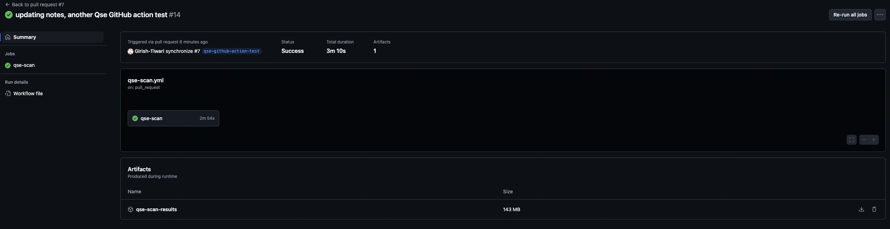

GitHub Actions Integration
Overview
This guide provides step-by-step instructions for integrating GitHub Actions with Quantum Safe Explorer.
It discusses primarily how to run scans on Opened Pull Requests, but can be adapted to any use case.
It covers: - Creating the GitHub Action repository - Creating the repository to be scanned - Triggering the Scan - Accessing the results - Guidance on creating a template repository - Troubleshooting and workarounds
Create Private GitHub Action repository
Structure:
qse-scan-action/
├── action.yml # Main action definition (at root!) - see below
├── README.md # starter README below
├── LICENSE
└── qse/ # QSE CLI files
├── cli.sh
├── cli.ps1
├── configuration.prop
├── LicenseAcceptance.config # TODO: Edit first line to =true, or the cli won't run on its own
├── version
├── vulnerability_severity.json
├── lib/
│ └── *.jar files
├── la_home/
├── insights/
└── swidtag/
Reveal code for action.yml
action.yml
name: "IBM Quantum Safe Explorer Scan"
description: "Runs the embedded IBM QSE CLI against a target folder"
author: "ibm-client-engineering" # TODO: replace with your org
inputs:
input_dir:
description: "Folder to scan (usually the checked-out repo)"
required: false
default: ${{ github.workspace }}
languages:
description: "Language list for QSE CLI"
required: false
default: "{.java,.jar,.py,.cpp,.go,.cs,.dart}"
output_dir:
description: "Output folder for QSE scan results"
required: false
default: "qse-scan-results"
runs:
using: "composite"
steps:
- name: Ensure CLI is executable
run: |
chmod +x "${GITHUB_ACTION_PATH}/qse/cli.sh"
shell: bash
- name: Run IBM QSE CLI scan
run: |
cd "${GITHUB_ACTION_PATH}/qse"
./cli.sh \
-i "${{ inputs.input_dir }}" \
-l "${{ inputs.languages }}" \
-o "${{ github.workspace }}/${{ inputs.output_dir }}"
shell: bash
- name: Upload QSE Scan Artifacts
uses: actions/upload-artifact@v3 # at the time of writing this, v4+ is not supported for GHES
with:
name: qse-scan-results
path: ${{ github.workspace }}/${{ inputs.output_dir }}
Reveal code for README.md
README.md
# IBM Quantum Safe Explorer Scan (GitHub Action)
Run the **IBM Quantum Safe Explorer (QSE)** CLI against a repository (or subfolder) during CI—most commonly on **Pull Requests**—to discover cryptographic usage, generate CBOM-like outputs, and surface potential modernization targets.
> **What this Action does:**
> - Executes the **embedded** IBM QSE CLI (bundled in this repo under `qse/`)
> - Scans your codebase for cryptographic usage across supported languages
> - Saves results as workflow artifacts for review
>
> **Why a shared Action?**
> - One centralized copy of the CLI for your org
> - Consistent, low-friction setup across many repos
> - Easy to update globally (tag a new version and bump the reference)
---
## Quick Start
1. **Reference this Action from a repository you want to scan.**
2. **Checkout** the repo’s code (so it’s on disk in the runner).
3. **Invoke the Action** with the directory to scan and language list.
This Action assumes the QSE CLI and its dependencies are **embedded** in this repository under `qse/` and are executable in a Linux GitHub runner.
---
## Usage Examples
### Scan entire repo on Pull Requests
```yaml
# .github/workflows/qse-scan.yml
name: QSE Scan on PRs
on:
pull_request:
jobs:
qse-scan:
# TODO: repace with the name of the hardware you have available under Actions -> Runners
runs-on: ubuntu-latest
steps:
# 1) Checkout the code to the runner's workspace
- uses: actions/checkout@v4
# 2) Set up JDK 17 (minimum)
- name: Set up JDK 17
uses: actions/setup-java@v4
with:
distribution: temurin
java-version: '17'
# 3) Run the action
- name: Run Quantum Safe Explorer scan
uses: your-org/qse-scan-action@v1
with:
# If you want to scan a specific folder, set it here; otherwise scan repo root
input_dir: ${{ github.workspace }}
# Optional: override default output folder
# output_dir: "qse-scan-results"
```
### Scan a subfolder (monorepo)
```yaml
- uses: actions/checkout@v4
- name: Set up JDK 17
uses: actions/setup-java@v4
with:
distribution: temurin
java-version: '17'
- name: QSE scan (only /services/payments)
uses: ./.github/actions/qse-scan
with:
input_dir: ${{ github.workspace }}/services/payments
# Optionally constrain languages scope-
# languages: "{.java,.py}"
```
### Scan multiple repos (matrix)
```yaml
name: Org-wide QSE Scan (matrix)
on:
workflow_dispatch:
jobs:
qse-matrix:
# TODO: repace with the name of the hardware you have available under Actions -> Runners
runs-on: ubuntu-latest
strategy:
fail-fast: false
matrix:
repo: [
"your-org/service-a",
"your-org/service-b",
"your-org/service-c"
]
steps:
- name: Checkout target repo
uses: actions/checkout@v4
with:
repository: ${{ matrix.repo }}
path: target
token: ${{ secrets.ORG_READONLY_PAT }}
- name: Set up JDK 17
uses: actions/setup-java@v4
with:
distribution: temurin
java-version: '17'
- name: Run QSE scan (local action)
uses: ./.github/actions/qse-scan
with:
# Optionally constrain scan to a subfolder
# input_dir: ${{ github.workspace }}/target
# Optionally constrain languages scope-
# languages: "{.java,.py}"
# Optionally specify override default output directory
# output_dir: "qse_${{ matrix.repo }}_out"
```
---
## Inputs
| Name | Required | Default | Description |
|--------------|----------|---------------------------|-------------|
| `input_dir` | No | `${{ github.workspace }}` | Directory to scan. Usually the checked-out repository or a subfolder. |
| `languages` | No | `{.java,.jar,.py,.cpp,.go,.cs,.dart}` | In brackets, comma-separated, no spaces. |
| `output_dir` | No | `qse-scan-results` | Where scan results are written. |
---
## Artifacts
- **Name:** `qse-scan-results` (or your custom `output_dir`)
- **Contents:** Whatever the QSE CLI produces (e.g., reports, logs, CBOM-like files)
- **Access:** Available in the workflow run’s “Artifacts” section for download and review
Example gating step:
```yaml
- name: Fail on high severity (example)
run: |
if grep -Riq 'severity.*HIGH' qse-scan-results; then
echo "::error::High-severity cryptographic findings detected."
exit 1
fi
```
---
## Permissions
- For scanning the current repo on PRs, the default `GITHUB_TOKEN` is enough.
- To scan other private repos from a central workflow, use a read-only PAT with `contents:read`.
---
## Performance & Runners
- Works on GitHub-hosted runners.
- For heavier scans, consider self-hosted runners.
---
## Troubleshooting
**CLI not found:** Ensure the `qse/` folder (with `cli.sh`) exists.
**Empty results:** Verify `input_dir` points to the correct path.
**Forked PRs:** Secrets are not passed to forked PRs; consider branch-based scans.
---
## Development (maintainers)
The Action is a composite action. Modify `action.yml` to extend CLI flags or support new languages.
---
## Versioning
Tag releases (`v1`, `v1.1.0`) and use them in consumer repos:
```yaml
uses: your-org/qse-scan-action@v1
```
---
## Security & Licensing
- Ensure licensing/EULA requirements for IBM QSE CLI are followed.
- Store any secrets outside this repo.
---
## Support
Open an issue in this repo or contact the platform/security team.Commit & Push
git add .
git commit -m "Initial commit of QSE scan action with embedded CLI"
git pushTag & Push
git tag v1
git push origin v1Settings
- In the repository, configure the following under Settings -> Actions -> General ->
- Actions permissions to one of:
- Allow local actions only
- Allow select actions
- Allow all actions = Workflow permissions
- Read and write permissions
- Access to one of:
- Accessible from repositories in the organization
- Accelsible from repositories in the enterprise
- Actions permissions to one of:
- Ensure you have all required permissions from your organization/enterprise
Release (Optional)
- Go to your Action repo on GitHub
- Click Releases > Draft new release
- Select the tag (v1)
- Publish
Create Repository to Scan
Structure:
my-project/
├── src/
├── README.md
└── .github/
└── workflows/
└── qse-scan.yml # Workflow that uses the action, see below
Reveal code for qse-scan.yml
.github/workflows/qse-scan.yml
name: QSE Scan on PRs
on:
pull_request:
jobs:
qse-scan:
runs-on: ubuntu-latest # TODO: Edit this to match your available hardware name exactly (check Settings -> Actions -> Runners)
steps:
# 1) Checkout the code to the runner's workspace
- uses: actions/checkout@v4
# 2) Call your reusable Action (tag the version you created, e.g., v1)
- name: IBM Quantum Safe Explorer scan
uses: your-org/qse-scan-action@v1 # TODO: replace with your org
with:
# If you want to scan a specific folder, set it here; otherwise scan repo root
input_dir: ${{ github.workspace }}
# Match your local CLI usage
# Optional: override default output folder
# output_dir: "qse-scan-results"Reference the README file above for other examples of workflow files
Settings
Configure similar settings for this respository so it can be scanned:
- Under Settings -> Actions -> General ->
- Actions permissions to one of:
- Allow local actions only
- Allow select actions
- Allow all actions
- Workflow permissions
- Read and write permissions
- Actions permissions to one of:
Commit & Push
git add .
git commit -m "Initial commit of repo to be scanned by QSE"
git pushTrigger the Scan
Perform the action that triggers your scan, based on your workflow yaml file
In the above example, you would have to open a Pull Request to trigger the scan:

- When you click into the Details, you will be able to see any issues and the runtime
- If successful, there will be an Artifacts section below with the scan resuts .zip file like so:

- Download the file by clicking the download icon on the right of the tile section with the filename
Template Repository
If you want to reuse this scan for many repositories, it is recommended to create a template that includes this “to be scanned repository” structure (shown again below) for reusability:
my-project/
├── src/
├── README.md
└── .github/
└── workflows/
└── qse-scan.yml # Workflow that uses the actionTroubleshooting
Action is not permitted by company policy
If the qse-scan-action is not allowed by your company or organization’s policy, you can still test it out (see details below)
For widespread use, it’s recommended to pursue getting permission to allow this action, as it is much more efficient and organized than the alternative laid out below, which should only be used for testing purposes
Instead of creating two separate repositories, one to host the action and one with the source code to be scanned, this alternative places the contents of the action into the same repository beings scanned like so:
MC-QSE/
├── README.md
├── src/ # Your application code
│ └── (your project files)
│
├── .github/
│ ├── actions/ # LOCAL ACTION
│ │ └── qse-scan/
│ │ ├── action.yml # Action definition
│ │ └── qse/ # QSE CLI
│ │ ├── cli.sh
│ │ ├── lib/*.jar
│ │ └── (other QSE files)
│ │
│ └── workflows/ # CONSUMER WORKFLOW
│ └── qse-scan.yml # Uses: ./.github/actions/qse-scanThe new qse-scan.yml becomes:
Reveal code for modified qse-scan.yml
.github/workflows/qse-scan.yml
name: QSE Scan on PRs
on:
pull_request:
jobs:
qse-scan:
# TODO: repace with the name of the hardware you have available under Actions -> Runners
runs-on: ubuntu-latest
steps:
# 1) Checkout the code to the runner's workspace
- uses: actions/checkout@v4
# 2) Set up JDK 17 (minimum)
- name: Set up JDK 17
uses: actions/setup-java@v4
with:
distribution: temurin
java-version: '17'
# 3) Run the action
- name: Run Quantum Safe Explorer scan
uses: ./.github/actions/qse-scan ### Accesses a local action yaml instead of the separate GitHub Action
with:
# If you want to scan a specific folder, set it here; otherwise scan repo root
input_dir: ${{ github.workspace }}
# Optional: override default output folder
# output_dir: "qse-scan-results"The whole .github/actions folder is moved into the same repository that you are scanning.
Even though the other changes are minimal, this results in a storage overhead to every repo, which is why it’s recommended to pursue the first method.
Template modification
For reuse with this method, create a template with the above structure, that includes the cli, instead